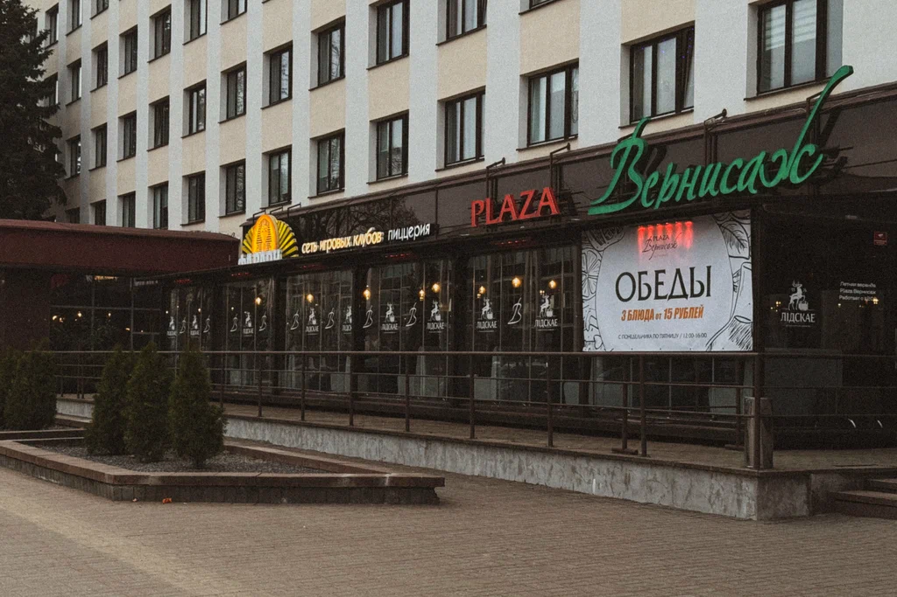

Новополоцк
Plaza Вернисаж
Яркая обстановка, широкий выбор блюд и возможность посидеть допоздна.
Гдеул. Кирова, 2
Форматресторан · караоке · клуб
Лучшее времябудни 18:00–19:30
Фокус менюевропейская и белорусская кухня, мясо, рыба, паста, пицца
Самое широкое меню из трёх вариантов
Есть недорогие сытные комбинации и более праздничные блюда
Официальное меню и цены доступны онлайн
Учесть: Пятница и суббота поздно вечером — более шумный клубный формат. Для спокойного общения лучше прийти раньше и попросить стол подальше от сцены.
Полный разбор +
Обстановка
Нарядный ресторанный интерьер. Вечером формат зависит от программы: в будни спокойнее, в выходные активнее.
Еда
Стейки, медальоны, лосось, белорусские блюда, салаты, паста и неаполитанская пицца.
Когда идти
Понедельник–четверг, 18:00–19:30. Поздний вечер пятницы и субботы выбирать только если музыка не мешает.
Бронирование
Желательно. Для разговора попросить место дальше от сцены, колонок и прохода.
Режим
пн–чт и вс 12:00–00:00; пт–сб 12:00–04:00.
Надёжность цен
Высокая: блюда и напитки взяты с официального сайта.